Pausa
Bajar el ruido: una invitación a soltar la lista de pendientes y aterrizar en el ahora.
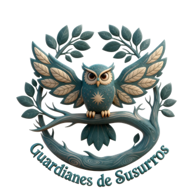
Guardianes de SusurrosLa experiencia para una verdadera conexión humana
El juego que os invita a salir de la prisa y el móvil, y a volver a reíros a carcajadas y a conectar de verdad.
No predice el futuro. Te invita a despertar en el presente.
✦ Venta anticipada: 1 y 2 de diciembre | 👥 De 1 a 10+ jugadores | 🎂 A partir de 8 años
Estáis en la mesa. Hay comida, hay vino, pero también hay pantallas. Las conversaciones se limitan a la logística: «pasa la sal», «¿qué hacemos el finde?», «estoy agotado».
Nos hemos vuelto expertos en convivir, en organizar la casa y en sobrevivir a la semana. Pero, entre la prisa y la rutina, se nos ha olvidado algo fundamental: cómo conectar de verdad con nuestra propia gente.
Te escondes detrás del cansancio y de tu rol de «adulto responsable», mientras… te estás perdiendo la vida y la magia de lo improvisado. Guardianes de Susurros es la excusa perfecta para parar la inercia, miraros a los ojos y volver a conectar contigo mismo y con tu tribu.
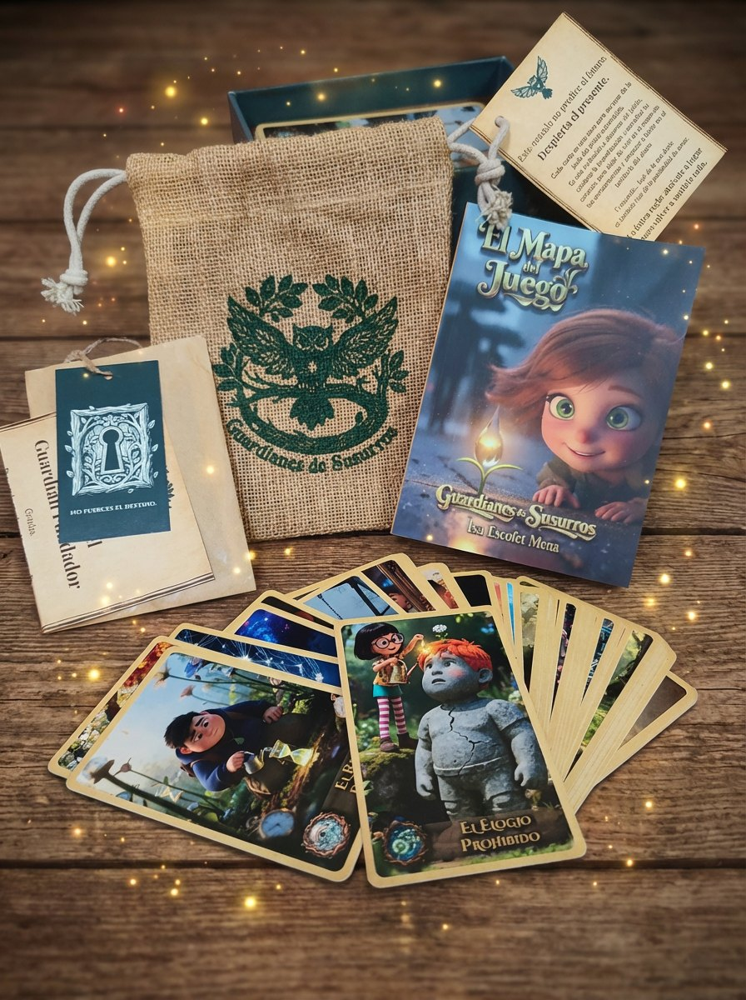
Es un juego de cartas pensado para bajar la guardia, sacaros una carcajada y recordar cómo se siente compartir algo real. No predice el futuro ni da lecciones magistrales. Simplemente, te propone disfrutar del presente con quien tienes al lado.
Cómo funciona
49 cartas pensadas para romper el hielo sin esfuerzo. Jugar es tan fácil como sentarse y seguir 4 pasos:
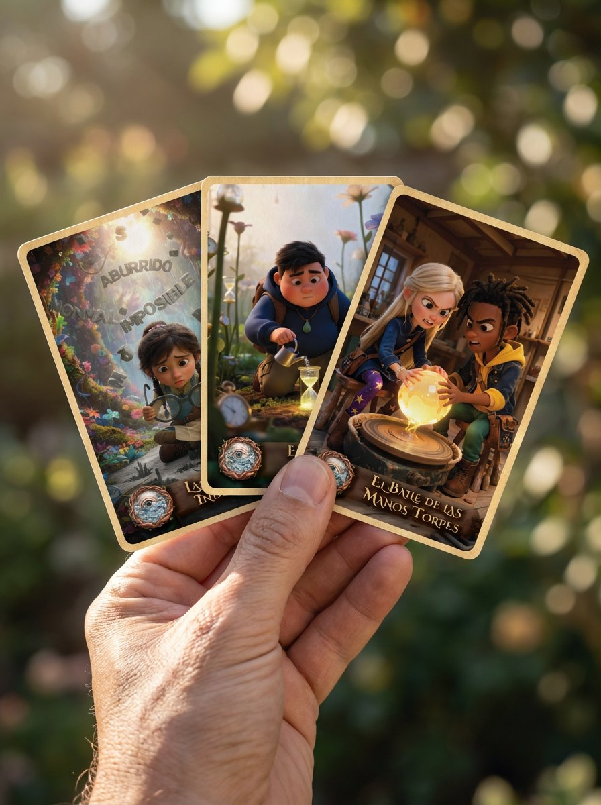
«La carta te habla. ¿Qué ves? ¿Qué sientes? No hay respuestas incorrectas.»
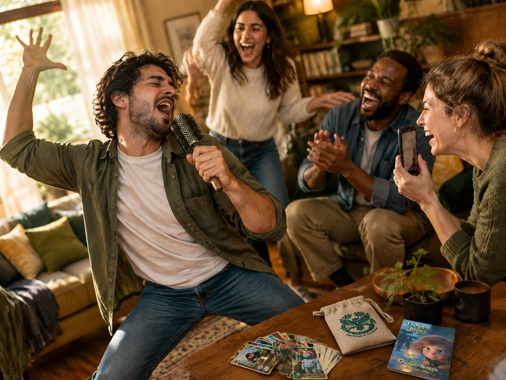
«Vivid la experiencia. Reíd, moveos, jugad. Sin pensar.»
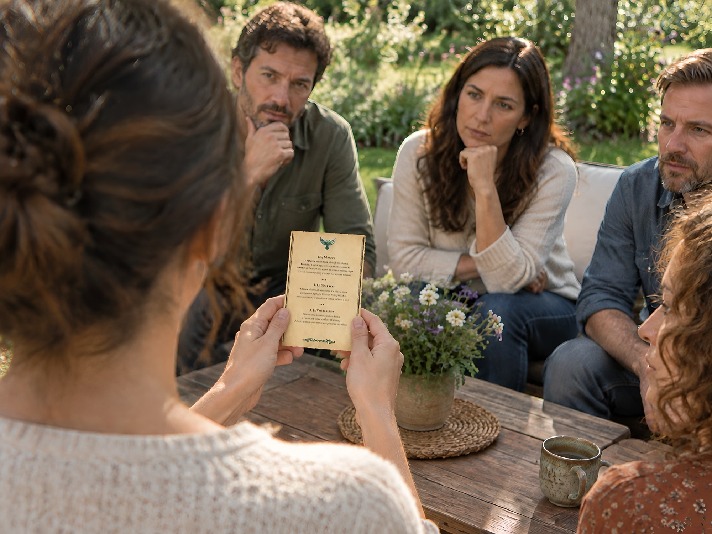
«La sabiduría aparece. Leed lo que la carta quiere enseñaros.»
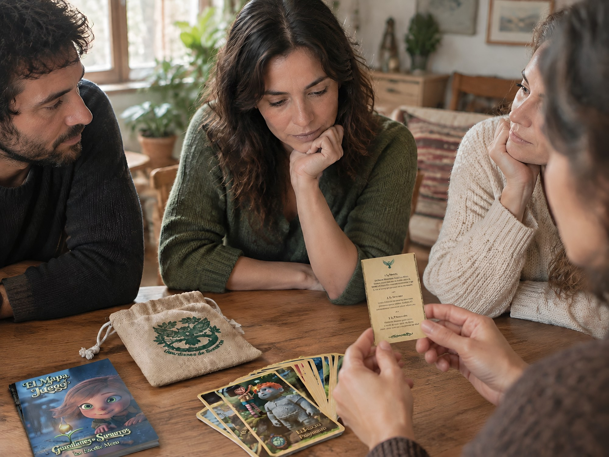
«La pregunta que abre el corazón. Aquí pueden nacer las conversaciones de verdad.»
El susurro de esta semana
Cada semana abrimos una nueva carta de Guardianes de Susurros.
Una pequeña invitación a salir del piloto automático, observar lo que ocurre en ti
y llevar una nueva mirada a tu vida.
Observa. Experimenta. Descubre.
Déjanos tu email y cada semana recibirás una nueva experiencia de Guardianes de Susurros.
Te enviaremos la nueva experiencia semanal.
Si te parece interesante o te aporta, te interesará la siguiente; y si no te aporta nada, siéntete libre para cancelar la suscripción cuando lo desees.
Bajar el ruido: una invitación a soltar la lista de pendientes y aterrizar en el ahora.
Permiso para el ridículo: se acaba el «qué dirán». Aquí se vale hacer el tonto y volver a la infancia.
Bajar la guardia: cuando ya os habéis reído un rato, hablar de lo que os importa puede dar menos miedo.
Mirar de otra manera: puedes descubrir que tu pareja, tu amigo o tu hijo también tiene miedos, sueños y manías.
Conexión de verdad: una invitación a dejar la superficie y hablar desde el corazón.
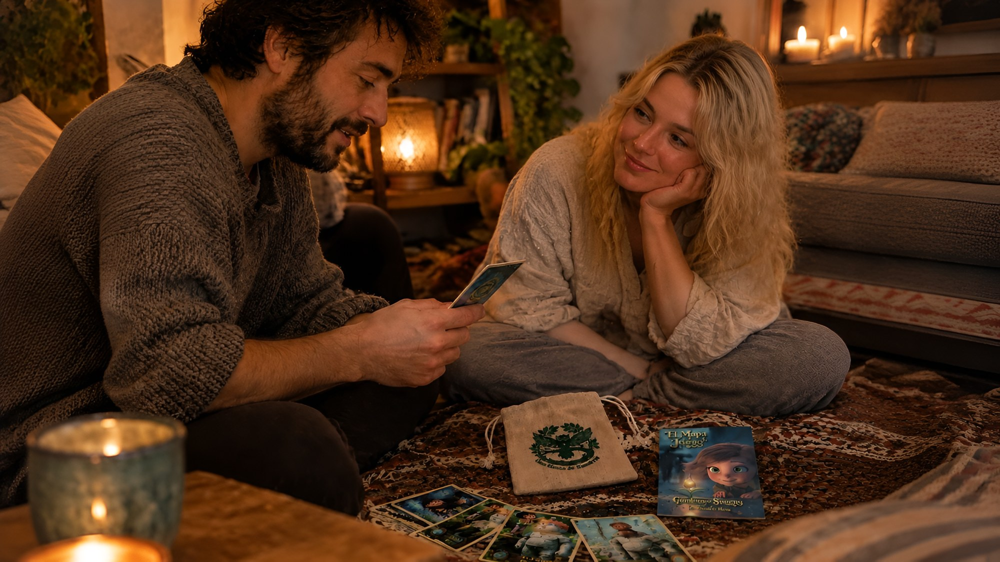
«Para cambiar el "estoy cansado" por el "cuéntame algo que no me hayas dicho nunca".»
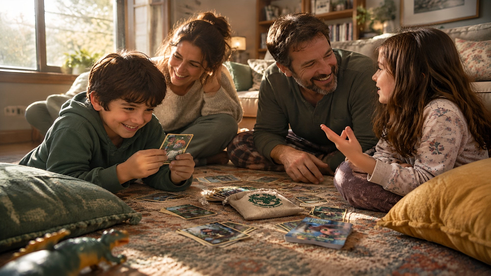
«Para que los adolescentes suelten el móvil y los adultos dejen de dar sermones.»
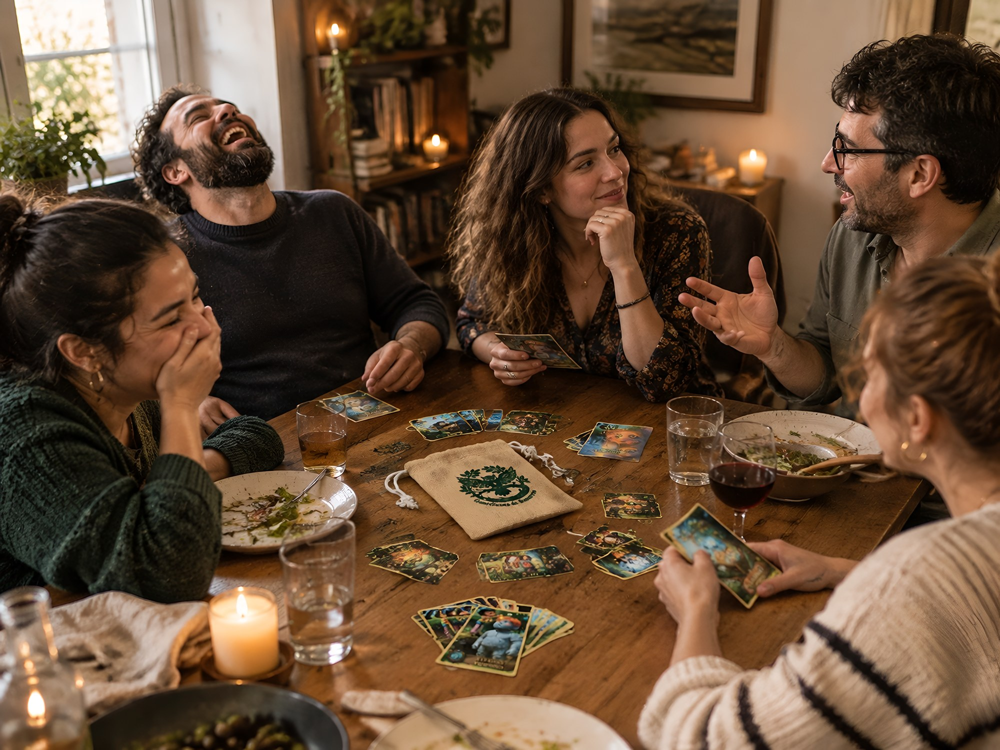
«Para esas cenas donde siempre se acaba hablando de lo mismo y queréis un plan diferente.»
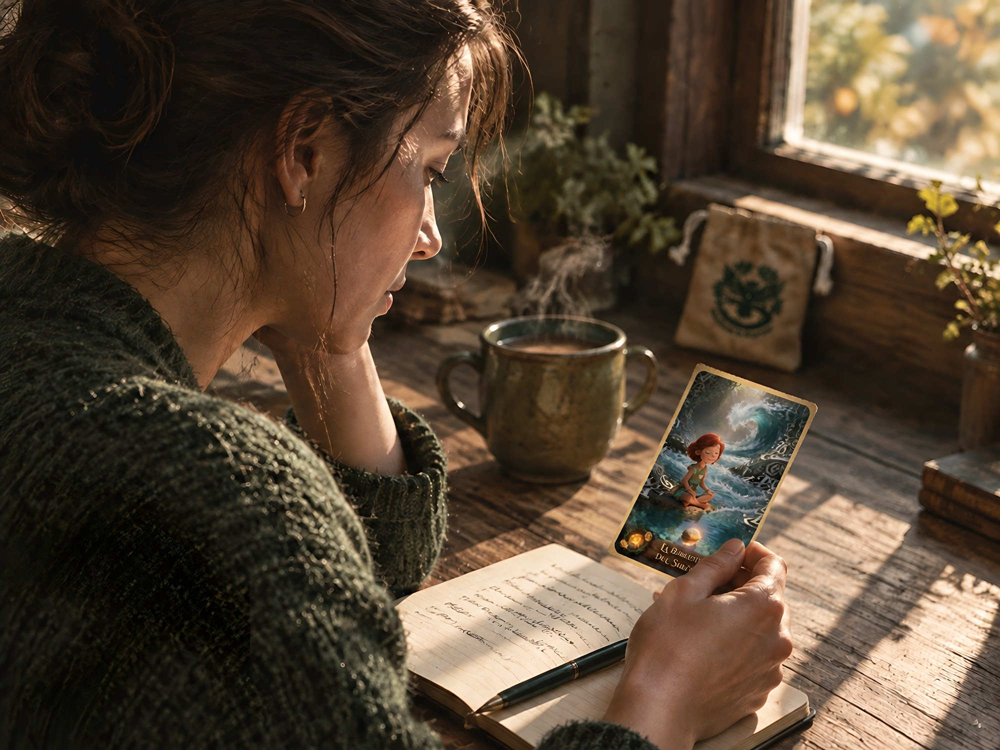
«Para ti. Para jugar en solitario, reflexionar y conectar contigo mismo.»
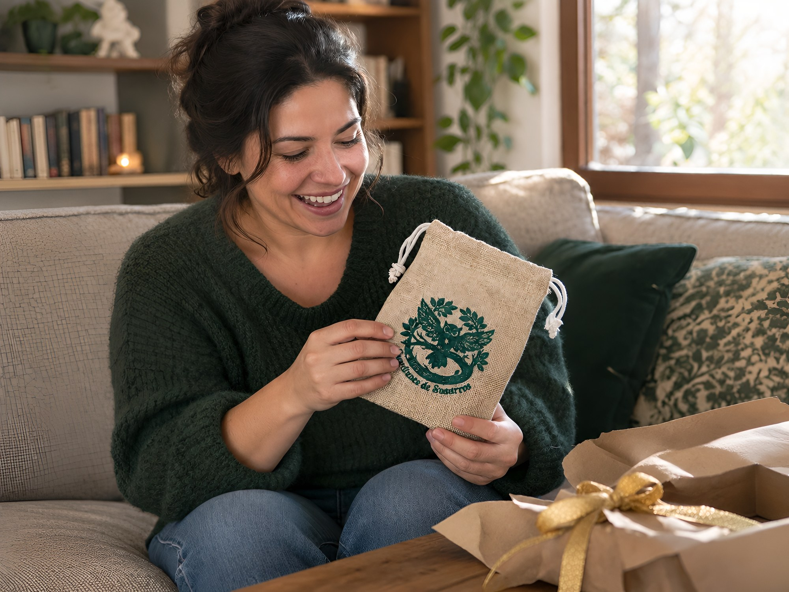
«El regalo perfecto para quien "ya lo tiene todo", pero necesita desconectar.»
«Vives muy en piloto automático y no nos paramos a pensar. Te pone en situaciones que en el día a día no te las planteas.»Victòria
«Un despertar. Básicamente. Es conocerme más y darme cuenta de muchas cosas que no había visto.»Adriana
«No me esperaba tantas risas. Me han llenado el corazón, de verdad.»Txènia15 años
«Un grupo tan dispar, que no nos conocíamos casi, y jugamos como si nos conociéramos de toda la vida.»Anskari
«Me voy muy feliz, con una sonrisa de oreja a oreja.»Quima
«Así aprenden más sobre la familia, se quieren, aprenden a trabajar mejor en equipo.»Vicky9 años
«Que lo juegue. Y que me invite.»Jesús
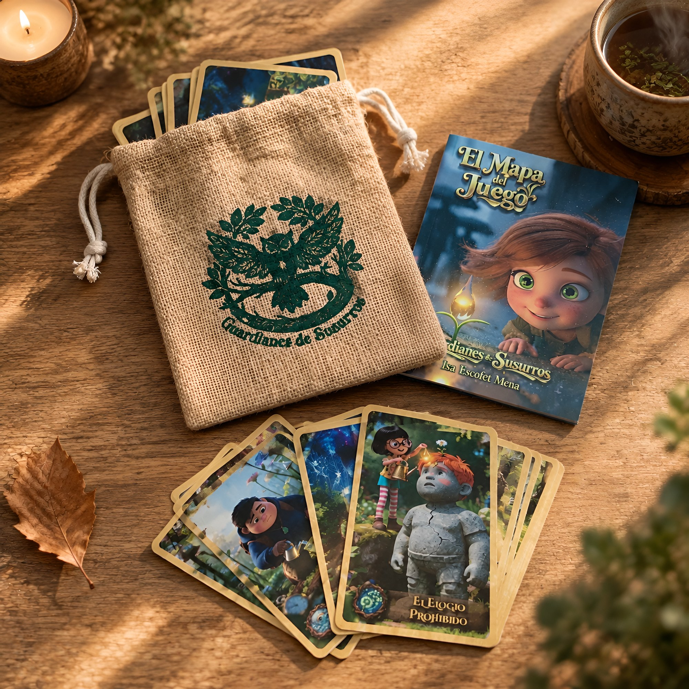
Todo esto por 49€. Desde el 1 de diciembre.
Menos que una cena fuera, y el recuerdo dura bastante más. Hoy todavía no se puede comprar: hoy solo se deja el email para entrar en la venta anticipada.
Quiero entrar en la venta anticipadaVenta anticipada: 1 y 2 de diciembre
De 1 a 10+ jugadores · A partir de 8 años · Sin pantallas, prometido.
Todavía no hemos abierto el saquito
Lo primero que se hace en una partida es escribir un deseo en un papelito y doblarlo. Se deja en el centro de la mesa y ahí se queda, callado, hasta el final del día. Entonces la tribu lo cumple.
Esto es exactamente eso. Deja aquí tu email y en diciembre lo cumplimos.
La venta anticipada será el 1 y 2 de diciembre.
Te escribiremos pocas veces antes de diciembre, y solo de esto. Y si te quieres bajar, se sale con un clic.
La venta anticipada es el 1 y 2 de diciembre. Si estás dentro, entras el primer día y lo tienes en casa en 24/48h desde que lo pidas. Y si prefieres que te lo demos en mano, nos vemos el 28 o el 29.
Son para quien se lleve el juego durante el lanzamiento. Pasado el lanzamiento, el regalo vuelve a ser un mes. La comunidad de Vivamos Despiertos es un espacio para vernos, sin juicios, e indagar juntos hacia dentro. Lo que hace el juego en una mesa, pero cada semana.
Para nada. Si sabes reír y hablar, sabes jugar.
Podéis jugar todos juntos o dividiros en grupos de 6-8. ¡Cuanta más gente, más divertido!
No siempre. Algunas cartas pueden llevarse a una experiencia individual y otras están pensadas para compartirlas con tu tribu. La idea es que la carta te invite a observar, experimentar y descubrir; tú decides cómo llevarla a tu vida.
Sí. Una misma carta puede revelarte algo diferente en distintos momentos de tu vida. Lo que ves hoy puede no ser lo mismo que veas dentro de unas semanas.
Sí, a partir de 8 años. De hecho, ellos son los maestros del juego.
No ocurre en el «cuando tenga tiempo» ni en el «el año que viene».
Ocurre ahora. En esta mesa. Con esta gente.
Atrévete a dejar el móvil, abrir el saquito y volver a sentirlo todo.
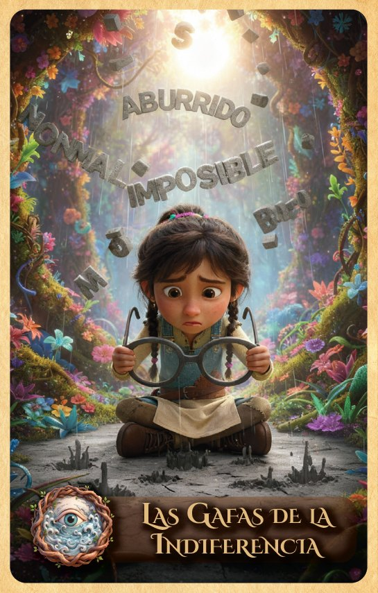
Mientras llega tu saquito…
En nuestro canal de YouTube encontrarás partidas,
experiencias, preguntas y pequeños momentos para seguir saliendo del piloto automático.
No necesitas saber las reglas.
Solo entrar, mirar y dejar que algo te encuentre.
Colaboraciones profesionales
Descubre cómo podemos colaborar para llevar Guardianes de Susurros a tus sesiones y procesos.
Hablar sobre colaboraciones